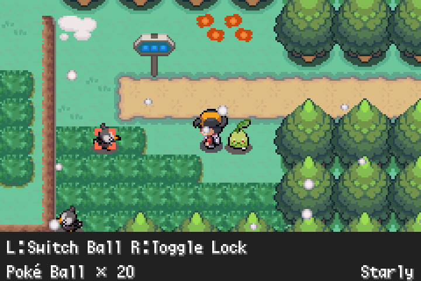
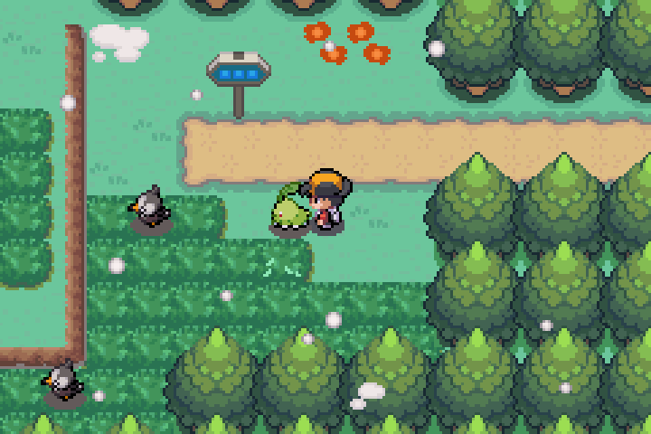
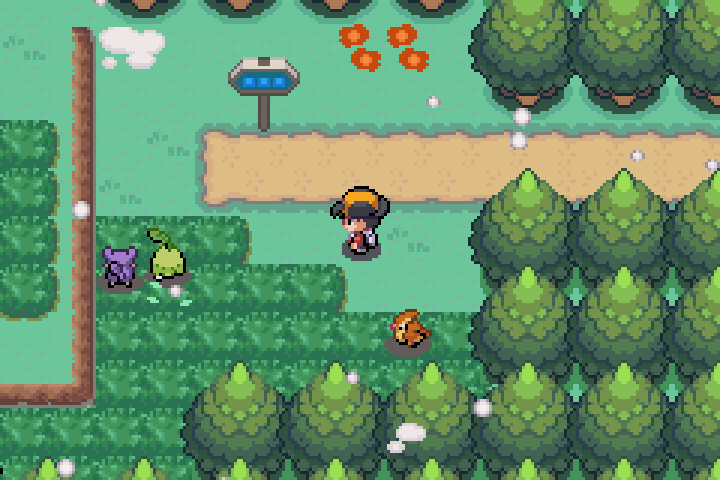
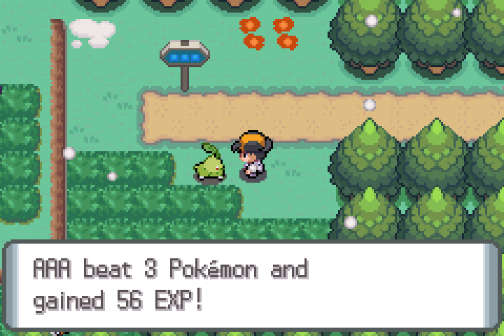
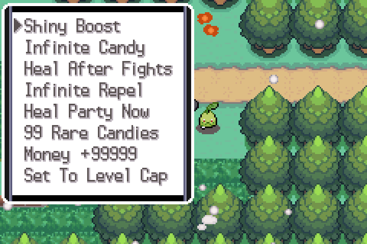
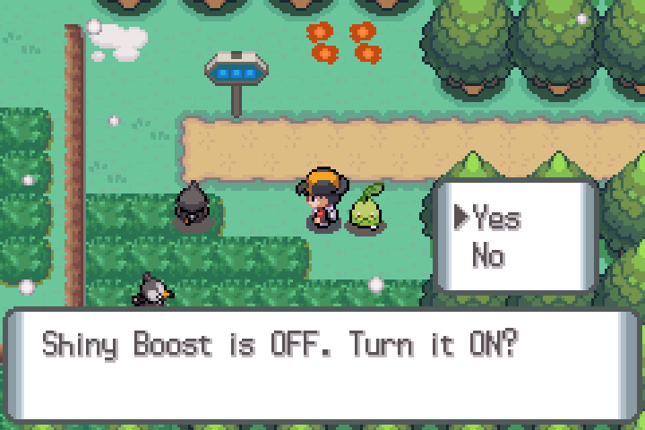
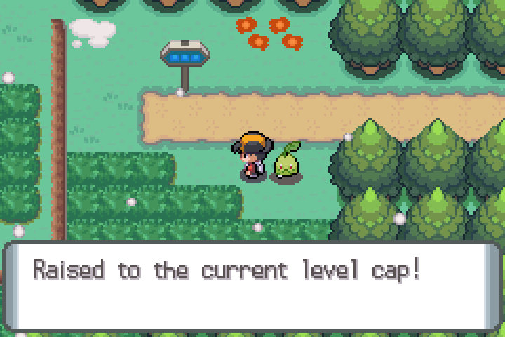

Everything on this page is fan-made by River with Claude. The original authors did not write it; do not report problems with it to them. The Frontier is in both the translation and River builds; the rest is River Edition only.
- Chapter 2: The Unwritten Rainbow
- Route 28, Mt. Silver and Red
- The Spectrum Frontier
- Partner Patrol
- Cheat Device
- Mega Evolution and auras
Chapter 2: The Unwritten Rainbow
Every beat is described. The fights and rewards are the useful part if you only want to prepare.
What you need
- Be Champion (flag
0x14DB) and watch Mom's Ashida scene at home (flag0x14DA). - Walk into Elm's lab in New Bark Town. Since v0.5.9 any step on the row in front of Elm starts the chapter.
- Bring your Key Stone. Several scenes use it.
- The story variable is
0x51B0(CH2_STAGE), 0 = not started. Stages run in a straight line from beat 1 to 13, so you cannot skip ahead.
Two fights matter: Ariana (beat 5) and Archer (beat 9). Both are Lv 60 and up. Bring a team near the 8-badge cap (Lv 64) and Full Restores. If you lose to Archer the stage is not saved as won; walk back in and the scene replays.
- 1
A Champion's invitation
Elm shows a printout of a four-second signal at 3:07 a.m. in the band the old Radio Tower used, and asks you to look into it. Sets stage 1.
- 2
The voice in the antenna
Lyra, Buena and Looker wait on the lobby carpet. Walk past the middle of the room. Your Key Stone makes a Rocket node glow rainbow and a recording of Archer says “The stage is set. Take your cue.” Lyra stays with Buena.
- 3
What the cloak meant
Lance, Silver and Anabel stand at the south end. Step onto the row near them. Lance admits he was the cloaked opponent and that he judged a bond like a test result. Silver hands over a relay coil and joins on his own terms.
- 4
The divided stone
The Elder, Axel and Dawn wait in front of the Pokémon Center. Step onto the west edge of the plaza. The Elder explains the Rainbow Stone carries a bond but cannot make one. Reward: Latias Mega aura. You are pointed to the Buried Tower.
- 5
Node B Boss
Silver and Dawn go in with you. Step into the chamber to meet Rocket Admin Ariana. After the fight the Key Stone cuts the node, but it restarts dimmer: it needs “something the stones answer to freely”.
- 6
The second page
Tamao and Morty are in the hall. Step onto the row near them. The Priestess's sealed document opens when Celebi's cry and a faint flute loosen the seal. The handwriting is Sange's: the Priestess of Ecruteak is Sange, grown old in the past. Her note reads: “Play this together, all of you, and leave my place empty. That is the promise.”
- 7
The one who walked away
Silver and a silhouetted Giovanni (no battle). Giovanni gives one fact: the chamber behind the waterfall was an old Rocket facility and its transmitter is still wired.
- 8
Node A goes dark
Walk toward the ladder and your Pokégear rings. Lyra, Buena and Looker report that Buena's all-listeners show drowned the node's 3:07 pulse. This is a scripted call, not one of the game's own Pokégear contacts.
- 9
The last act Boss
Archer, with the shards arranged in a ring. He invited the Champion because the network needs a willing first connection. You refuse, he attempts an override anyway, and Silver and Dawn go to free the Pokémon being fed into the ring. He carries a Key Stone and Alakazam holds the generic Mega Stone, so expect a Mega Evolution.
- 10
Overload
The ring flares red, Silver is hurt freeing a Pokémon, and wild Pokémon around the islands are forced to Mega Evolve. Archer cannot stop it either. Stage 10 is set here.
- 11
The song
The Kimono Girls arrive and play Sange's piece, leaving the fifth place empty. The ring settles, Lugia answers from far away, and Looker takes Archer into custody. Reward: Diancie Mega aura from Tamao.
- 12
After the signal
Lance and Silver wait at the entrance. The performance resumes with one place left empty and a flute resting there. The centre dancer stays gone from this point on.
- 13
The Mystic Ticket
Ashida explains the ticket and sends you up the rock. At the summit corridor a white flash, two cries and a rainbow over the whole sea close the story. Lugia and Ho-Oh are never drawn on screen; you hear them.
The build log records the Vermilion ferry to Navel Rock as not tested on a real late-game save, and does not record a built beat 14 (Red's closing line and Elm's last call). If a beat does not trigger for you, report it with your save.
The two boss teams
Route 28, Mt. Silver and Red
Getting in
- Be Champion.
- Go to the Route 26 gatehouse. Before the Champion flag the west guard turns you back (“Ahead is Mt. Silver, where frighteningly strong Pokémon live.”).
- Take the west door to Route 28.
What is there
Route 28
A tall-grass patch, an outdoor rest-stop nurse who fully heals your party, and the cave into Mt. Silver. Wild table: Route 28.
Mt. Silver 1F to 3F
Built from the Cerulean Cave layouts. Wild tables: 1F, 2F, 3F. Mewtwo's static encounter was removed.
Item balls
Eight balls on flags 0x1338 to 0x133F. The build log lists Max Revive, PP Max, Ultra Ball, Full Restore, Protein, Carbos, Rare Candy and Max Elixir. None respawn.
Spawns lean on species that nothing else in the game uses, so check the wild tables if you are filling the Pokédex.
Trainers
Eight trainers on the route and the three floors. Beaten trainers stay beaten.
Red
From the Mewtwo nook on the third floor, a trigger tile leads to the summit, an icy map shaped like the Alabaster Icelands. Red waits there. Beating him sets flag 0x1340, and he looks toward a rainbow shimmer beyond the Whirl Islands.
Six Pokémon at Lv 70 to 74 with Full Restores, so plan for a long fight. Bring Revives, a Fighting-type answer for Snorlax and Electric or Grass answers for Blastoise.
The Spectrum Frontier
A Battle Tower–style facility with seven floors and seven colours. Both editions have it.
Getting there
Become Champion, then talk to the ferry NPC at Vermilion City's harbour and say yes to “Would you like to go to the Battle Frontier?” The hub is the Frontier Hall.
Rules
| Rule | Detail |
|---|---|
| Level | Everyone fights at Lv 50. Your Pokémon are scaled up or down to 50. |
| Singles / Doubles | Pick 3 for 3v3, or 4 for 4v4. Seven battles a round. |
| Clauses | No duplicate species and no duplicate held items on a team (also true of opponents). |
| Banned | Eggs and the uber list (Mewtwo, Lugia, Ho-Oh, the Hoenn weather trio, Rayquaza, Arceus, the Sinnoh creation trio, and similar). One sub-legendary is allowed. |
| Items | No Bag items in battle. Held items work. Mega Evolution allowed. No Z-moves or Dynamax. |
| Healing | Your team is healed after each win. |
| Saving | The game offers to save between battles. Quitting mid-round loses the streak. |
The floors
| Floor | Colour | Trainer classes |
|---|---|---|
| 1 | Red | Youngster, Lass, Camper, Picnicker |
| 2 | Orange | Hiker, Fisherman, Bug Catcher, Sailor |
| 3 | Yellow | Gentleman, Beauty, Pokéfan, Idol |
| 4 | Green | Bird Keeper, Gardener |
| 5 | Blue | Swimmer, Cooltrainer, Expert |
| 6 | Indigo | Psychic, Channeler, Sage, Medium |
| 7 | Violet | Ace Trainer, Dragon Tamer |
Opponent teams are generated from a pool of sets, so they change from round to round.
Brains
Lance is the Tower Master at streak 21 (Silver Seal) and Anabel the Salon Maiden at streak 49 (Gold Seal). A third, Silver, appears as a visiting challenger at streak 27. Their teams are hand-built and exact:
Battle Points shop
BP are the facility's own currency, separate from the Guild's BracerPoints.
Floor class lists, the type-themed floors and the Brain streak numbers come from the design spec and data files. The shop stock is the data file; check the clerk in game.
Partner Patrol
Your walking partner goes out on its own, battles the wild Pokémon it can see, and brings back experience and drops.




How to use it
- Let a Pokémon walk behind you (the hack's Walk/Follow option).
- Press L for Quick Catch and aim at a visible wild Pokémon. You need standard button mode and a Poké Ball.
- Press SELECT. The partner goes to the target, fights, and moves on to the next one nearby.
- Read the report. B recalls the partner at any time.
How a fight works
No moves. Each side attacks with its best own type (with the same-type bonus) against the other's types, using the normal type chart. Level, stats and speed count. Abilities, items and weather do not.
The cost
Every fight costs HP. Below 40% the partner retreats and the patrol ends. A partner that starts below 40% refuses. It never faints from a patrol.
The payoff
EXP of base yield × level ÷ 7 for the partner alone. One drop per win: 20% Exp. Candy, 30% Berry, 50% EV Feathers. Plus the species' held items (50% common, 5% rare).
| Patrol size | Targets | Range |
|---|---|---|
| Short | up to 4 | 8 tiles |
| Normal (default) | up to 10 | 12 tiles |
| Long | up to 20 | 16 tiles |
A shiny stops the patrol: the partner does not fight it, and the game starts a real wild battle with that very Pokémon so you can catch it.
When the partner outgrows its moves the game asks about each new move after the report; Yes opens the Known Moves screen. If it can evolve, the normal evolution scene follows (B cancels). Patrols do not catch Pokémon or change the Pokédex.
Settings (on/off and size) open with L + R + SELECT and are saved. It only works where Quick Catch works, and not while surfing or biking.
Cheat Device



Press SELECT + R on the map; B closes it. Switches are saved in your file.
| Entry | Type | Effect |
|---|---|---|
| Shiny Boost | Switch | Pokémon made under your trainer ID (wild, gifts, eggs) are shiny more often. Odds: Off, 1 in 16 (default), 64, 256, 1024, 4096, 1 in 2, Always. Trainer Pokémon are unaffected. |
| Infinite Candy | Switch | Rare Candies are not used up. |
| Heal After Fights | Switch | Full party heal when any battle ends. |
| Infinite Repel | Switch | Repel never runs out; higher-level wild Pokémon can still appear. |
| Heal Party Now | Action | Heals the party anywhere. |
| 99 Rare Candies | Action | Adds 99 to the Training pocket. |
| Money +99999 | Action | Adds ¥99,999. |
| Set To Level Cap | Action | Raises one party Pokémon to the cap for your badge count (9, 16, 23, 30, 37, 39, 44, 52, 64). Never lowers; no moves learned or evolution until the next level-up. |
Make a normal in-game save before using the cheats you cannot undo (candies, money, level cap). The numbered translation betas do not include the Cheat Device.
Mega Evolution and auras
You need the Key Stone and a Mega Stone. A species also needs its aura flag, which quest scripts set with a line such as “X stored Mega Y's aura”. Without it that Pokémon cannot Mega Evolve even with the stone.
Quest scripts in the base game set the flag for Pidgeot, Slowbro, Gyarados, Sableye, Lucario, Meganium, Feraligatr, Starmie, Victreebel, Excadrill, Staraptor and Typhlosion. The River Edition adds Latias (Chapter 2 beat 4) and Diancie (beat 11). Kangaskhan and Audino also have Mega forms in the ROM but no script was found that unlocks them.
A trainer only Mega Evolves if they carry a Key Stone and a Pokémon holds a Mega Stone. Archer does both.